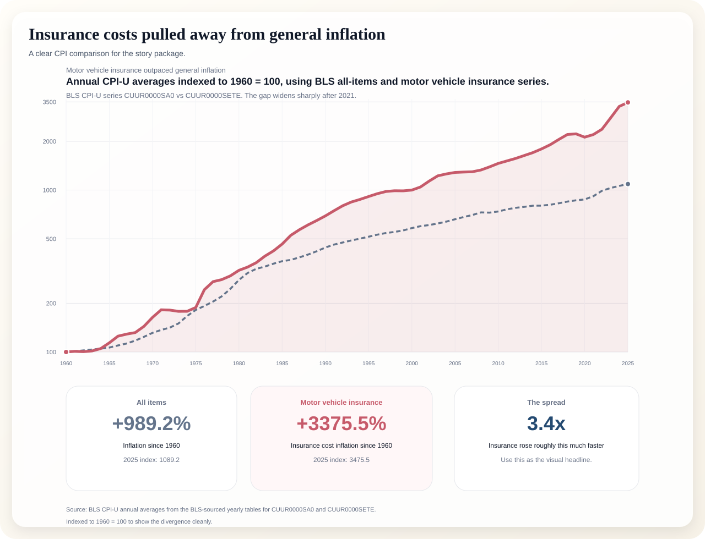
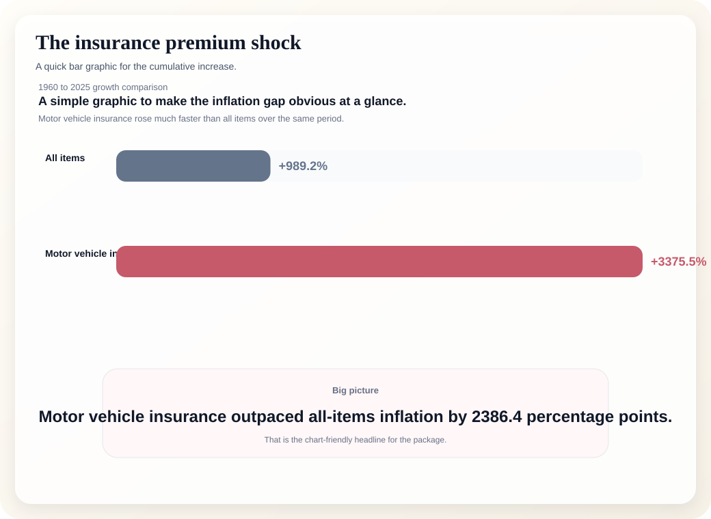
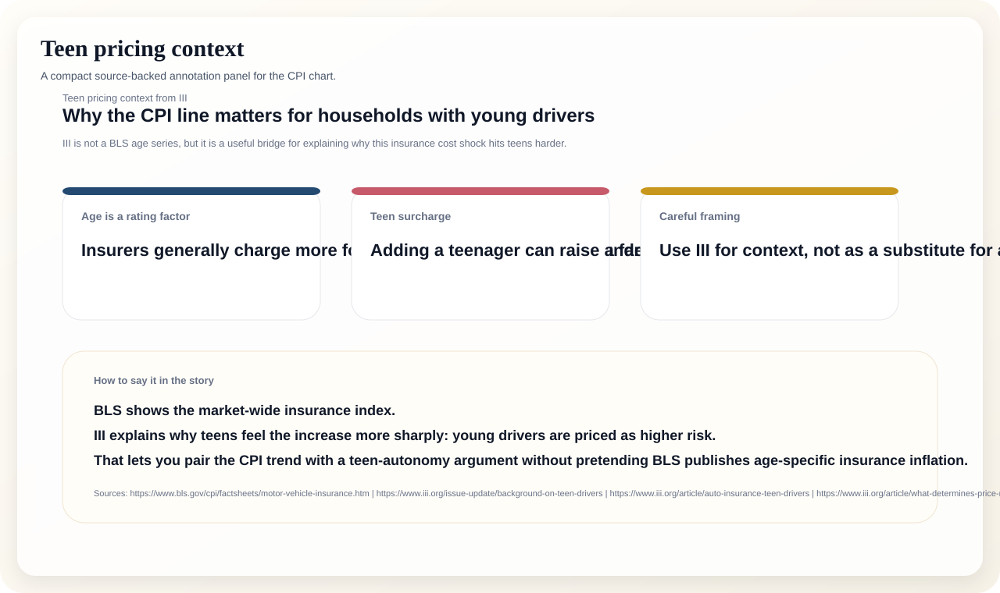

The broad CPI line is the market-wide story. The teen-driver context explains why young families feel the increase so much more acutely. Together, they give us a defensible way to talk about the cost of delaying independence without pretending the BLS publishes age-specific insurance inflation.
The dashed line is all-items CPI, indexed to 1960 = 100. The red line is motor vehicle insurance, indexed the same way, which makes the divergence obvious.

Simple horizontal bars show how much each index rose from 1960 to 2025.

III explains why the insurance trend matters more for young drivers and their families.

Use this language if you want to keep the claim conservative and source-based.